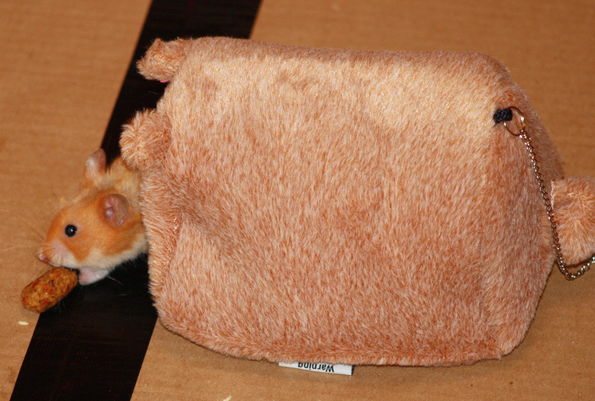

18-Apr-2017 | Milku
After an short Easter break, I'm going to start looking at hamsters in science, starting with our taxonomic classification.
The Smithsonsian Magazine tells the story of Israel Aharoni, a zoologist who best known for his 1930 expedition to Aleppo, Syria, where he found a group of hamsters that he took to Jerusalem to use as laboratory animals. One of Aharoni’s colleagues, Saul Adler, thought that hamsters were similar enough to humans to allow them to be used for medical research. What a cheek! We're far superior!
Aharoni had a habit of giving animals Hebrew names and true to form he called the hamsters he discovered "oger". But our 'name is Legion, for we are many'. And not because we're demonic in any way. Our taxonomy starts out simply enough:
Then it gets a bit more complex, with 7 genera:
The most common hamsters found as pets are:
But there are 24 different hamster species. And how many have puny humans got, eh? But don't try to collect them all...we don't like mingling very much.
I'll cover some of the scientific discoveries made by hamsters tomorrow, but for now I'm heading off for a lie down and a snack.
